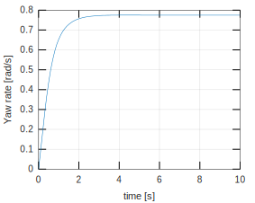
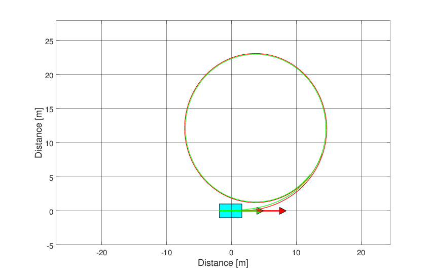

Defining parameters
T = 10; % Total simulation time [s] resol = 100; % Resolution TSPAN = 0:T/resol:T; % Time span [s]
Tire (default)
TireModel = TirePacejka();
Vehicle
System = VehicleSimpleNonlinear();
% Defining vehicle parameters
System.mF0 = 700;
System.mR0 = 600;
System.IT = 10000;
System.lT = 3.5;
System.nF = 2;
System.nR = 2;
System.wT = 2;
System.muy = .8;
System.deltaf = 20*pi/180;
System.Fxf = 0;
System.Fxr = @VelControl;
System.tire = TireModel;
simulator = Simulator(System, TSPAN);
simulator.V0 = 8.333;Run simulation
simulator.Simulate();
Results
% Retrieving states XT = simulator.XT; YT = simulator.YT; PSI = simulator.PSI; VEL = simulator.VEL; ALPHAT = simulator.ALPHAT; dPSI = simulator.dPSI; f1 = figure(1); hold on ; grid on ; box on plot(TSPAN,XT) xlabel('time [s]') ylabel('Distance in the x direction [m]')

f2 = figure(2); hold on ; grid on ; box on plot(TSPAN,YT) xlabel('time [s]') ylabel('Distance in the y direction [m]')
f3 = figure(3); hold on ; grid on ; box on plot(TSPAN,PSI) xlabel('time [s]') ylabel('Yaw angle [rad]')

f4 = figure(4); hold on ; grid on ; box on plot(TSPAN,VEL) xlabel('time [s]') ylabel('Velocity [m/s]')
f5 = figure(5); hold on ; grid on ; box on plot(TSPAN,ALPHAT) xlabel('time [s]') ylabel('Vehicle slip angle [rad/s]')
f6 = figure(6); hold on ; grid on ; box on plot(TSPAN,dPSI) xlabel('time [s]') ylabel('Yaw rate [rad/s]')
Frame and animation
g = Graphics(simulator);
g.TractorColor = 'c';
g.Frame();
angulo = 0:0.01:2*pi;
[R,XC,YC] = circfit(XT(40:end),YT(40:end));
XX = XC + R*cos(angulo);
YY = YC + R*sin(angulo);
hold on
plot(XX,YY,'k')
g.Animation();Maneuver radius
disp(num2str(R))